MCMC algorithm
หัวข้อนี้จะกล่าวถึงมโนทัศน์ของลูกโซ่มาร์คอฟมอนติคาร์โล (Monte Carlo Markov Chain: MCMC) ที่เป็นเครื่องมือสำคัญสำหรับประมาณการแจกแจงความน่าจะเป็นภายหลัง (posterior distribution) สำหรับการวิเคราะห์ข้อมูลที่อาศัยแนวคิดแบบเบส์
แนวคิดเกี่ยวกับ MCMC มีมาค่อนข้างยาวนานประมาณ 40 ปีแล้ว แต่ด้วยข้อจำกัดทั้งด้านโปรแกรมและประสิทธิภาพของคอมพิวเตอร์ทำให้การใช้งานอัลกอริทึม ในสมัยก่อนทำได้ยาก และเกือบจะเป็นไปไม่ได้ที่จะใช้งานอัลกอริทึม MCMC กับปัญหาทางสถิติที่มีความซับซ้อน แต่ด้วยความก้าวหน้าทางเทคโนโลยีในยุคปัจจุบันทำให้ข้อจำกัดดังกล่าวลดลงจนแทบไม่มีอีกต่อไป
อัลกอริทึม MCMC เป็นอัลกอริทึมที่ใช้สำหรับประมาณการแจกแจงความน่าจะเป็นภายหลังของพารามิเตอร์ โดยใช้ตัวอย่างสุ่มที่สร้างจากเทคนิคการจำลองแบบมอนติคาร์โล แทนการพิสูจน์หรือการทดลองแทนค่าเพื่อหาค่าที่ดีที่สุดทางคณิตศาสตร์ คำตอบที่ได้จากอัลกอริทึม MCMC นี้จึงไม่ใช่สูตรหรือฟังก์ชันทางคณิตศาสตร์ แต่จะเป็นตัวอย่างสุ่มของพารามิเตอร์ที่สร้างขึ้น ตัวอย่างดังกล่าวหากมีจำนวนที่มากเพียงพอ จะสามารถใช้เป็นตัวแทนของการแจกแจงความน่าจะเป็นภายหลังที่ต้องการ และสามารถนำตัวอย่างดังกล่าวมาผ่านกระบวนการทางสถิติเพื่อสร้างข้อสรุปเกี่ยวกับพารามิเตอร์ในโมเดลได้โดยตรง กล่าวโดยสรุปได้ว่าอัลกอริทึม MCMC เป็นเทคนิคที่นำมาประยุกต์ใช้ในการวิเคราะห์ข้อมูลแบบเบส์ เพื่อประมาณการแจกแจงความน่าจะเป็นภายหลังของพารามิเตอร์ต่าง ๆ ภายในโมเดล ด้วยตัวอย่างสุ่มของพารามิเตอร์
รูปต่อไปนี้แสดงการเปรียบเทียบระหว่างการแจกแจงความน่าจะเป็นเชิงทฤษฎี (theoretical/exact distribution) กับการแจกแจงความน่าจะเป็นที่ประมาณด้วยตัวอย่างสุ่มที่สร้างจากเทคนิคการจำลองแบบมอนติคาร์โล
ด้วยเทคนิคการจำลองแบบมอนติคาร์โล ผู้วิเคราะห์สามารถจำลองตัวอย่างสุ่มจากการแจกแจงความน่าจะเป็นใดก็ได้ แต่มีเงื่อนไขว่าต้องทราบฟังก์ชันความน่าจะเป็นของการแจกแจงดังกล่าวก่อน เงื่อนไขนี้เป็นข้อจำกัดที่ทำให้ไม่สามารถใช้เทคนิคการจำลองแบบมอนติคาร์โลแบบปกติได้โดยตรง ทั้งนี้เป็นเพราะในโมเดลที่มีความซับซ้อนระดับหนึ่ง เป็นการยากมากที่ผู้วิเคราะห์จะทราบรูปแบบหรือฟังก์ชันของการแจกแจงความน่าจะเป็นภายหลังของพารามิเตอร์ในโมเดลที่ต้องการใช้งาน
library(scales)
x<-seq(-3,3,0.01)
par(mfrow=c(2,3), mar=c(1,5,6,5))
plot(x, dnorm(x,0,1),type="l", main="exact distribution N(0,1)", xlab="X")
hist(rnorm(500,0,1), freq=F, nclass=30, col=alpha("#004D80",0.7),
main="sample distribution n=500", xlab="X")
hist(rnorm(1000,0,1), freq=F, nclass=30, col=alpha("#004D80",0.7),
main="sample distribution n=1000", xlab="X")
hist(rnorm(5000,0,1), freq=F, nclass=30, col=alpha("#004D80",0.7),
main="sample distribution n=5000", xlab="X")
hist(rnorm(10000,0,1), freq=F, nclass=30, col=alpha("#004D80",0.7),
main="sample distribution n=10000", xlab="X")
hist(rnorm(50000,0,1), freq=F, nclass=30, col=alpha("#004D80",0.7),
main="sample distribution n=50000", xlab="X")
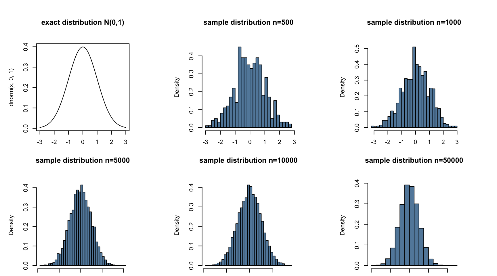
Metropolis algorithm
Metropolis algorithm เป็นกระบวนการสุ่ม (random process/stochastic process) ประเภทหนึ่ง ตั้งชื่ออัลกอริทึมตามคณะผู้พัฒนาได้แก่ Metropolis, Rosenbluth, Rosenbluth, Teller & Teller (1953)
อัลกอริทึมนี้สามารถนำมาประยุกต์ใช้เพื่อหาการแจกแจงความน่าจะเป็นภายหลังของพารามิเตอร์ โดยปริภูมิของพารามิเตอร์ (parameters space) ดังกล่าวนั้นเป็นไปได้ทั้งแบบไม่ต่อเนื่อง (discrete) และแบบต่อเนื่อง (continuous) และสามารถใช้ได้กับปริภูมิพารามิเตอร์ที่มีมิติตั้งแต่หนึ่งมิติ (unidimensional) ไปจนถึงหลายมิติ (multidimensional) อัลกอริทึม Metropolis มีลักษณะการทำงานแบบทวนซ้ำ (interative) มีรายละเอียดของขั้นตอนวิธีดังนี้
กำหนดให้ \(p(\theta)\) เป็นการแจกแจงความน่าจะเป็นภายหลังที่ต้องการประมาณ
สุ่ม/เลือกค่าตั้งต้น (initial values) ของพารามิเตอร์ในการแจกแจงความน่าจะเป็นภายหลัง เขียนแทนด้วย \(\theta_0\) ทั้งนี้ค่าพารามิเตอร์ที่สุ่มมามีเงื่อนไขคือต้องอยู่ภายใต้ปริภูมิของพารามิเตอร์ กล่าวคือ \(p(\theta_0)>0\)
สร้างค่า proposal jump เพื่อใช้เป็นตัวปรับค่าตั้งต้นของพารามิเตอร์ เขียนแทนด้วย \(\Delta\theta\) จากการแจกแจงความน่าจะเป็นโครงร่าง (proposal distribution) ที่กำหนดไว้ เช่นอาจกำหนดให้ \(\Delta\theta \sim N(0, \sigma)\) ซึ่งจะได้ proposed values ของพารามิเตอร์ค่าใหม่เขียนแทนด้วย \(\theta_{pro}\) โดยที่ \(\theta_{pro}=\theta_{i-1}+\Delta\theta\) เมื่อ \(i=1,2,3,...,m\)
คำนวณค่าความน่าจะเป็นในการเดิน/เปลี่ยนแปลงของ proposed values ดังนี้ \(p_{move}=min(1,\frac{p(\theta_{pro})}{p(\theta_{i-1})})\) โดยที่ \(p(\theta_{pro})=p(D|\theta_{pro}p(\theta_{pro}))\) และ \(p(\theta_{i-1})=p(D|\theta_{i-1})p(\theta_{i-1})\) จากความน่าจะเป็นข้างต้น จะเห็นว่า ถ้า \(\theta_{pro}\) มีค่าอยู่นอกเหนือค่าที่เป็นไปได้หรือค่าที่ควรจะเป็นของพารามิเตอร์ \(\theta\) ในโมเดล ค่าความน่าจะเป็นก่อนหน้า \(p(\theta_{pro})\) และ/หรือค่าของฟังก์ชันภาวะความควรจะเป็น \(p(D|\theta_{pro})\) จะมีค่าเท่ากับ 0 ซึ่งทำให้ค่า \(p_{move}=0\)
เกณฑ์การพิจารณายอมรับค่า proposed value \(\theta_{pro}\) จะยอมรับด้วยความน่าจะเป็นเท่ากับ \(p_{move}\) ในทางปฏิบัติจะสุ่มเลขสุ่มจากการแจกแจงแบบ uniform [0,1] ขึ้นมา 1 ค่า เขียนแทนด้วย \(u\) หาก \(u<p_{move}\) จะยอมรับค่า \(theta_{pro}\) ดังกล่าว แต่ถ้าหาก \(u > p_{move}\) จะปฏิเสธค่า \(\theta_{pro}\) ในกรณีนี้ค่าพารามิเตอร์ \(\theta_{i-1}\) ก็จะไม่ได้มีการเปลี่ยนแปลงสถานะ
อัลกอริทึมข้างต้นเป็นกระบวนการทวนซ้ำโดยจะดำเนินการทวนซ้ำในขั้นตอนที่ 2-4 จนกระทั่งตัวอย่างพารามิเตอร์ \(\theta\) มีจำนวนเพียงพอ และมีคุณสมบัติที่เหมาะสม
Example 1: Tossing coin
จากตัวอย่างปัญหาการวิเคราะห์ความเที่ยงตรงของเหรียญ หากต้องการทำ MCMC เพื่อประมาณการแจกแจงความน่าจะเป็นภายหลังของพารามิเตอร์ความลำเอียง อาจดำเนินการดังนี้
กำหนดให้ \(y_i\) คือค่าสังเกตของการโยนเหรียญ โดยที่ \(i=1,2,3...,n\) และโมเดลของค่าสังเกตดังกล่าวคือ \(p(y_i|\theta)=\theta^y_i(1-\theta)^{n-y_i}\) จากการกำหนดนี้จะได้ฟังก์ชันภาวะความควรจะเป็นคือ
และกำหนดให้พารามิเตอร์ \(\theta\) มีการแจกแจงความน่าจะเป็นก่อนหน้าเป็น
การแจกแจงความน่าจะเป็นแบบ Beta มีธรรมชาติของการแจกแจงคือ ค่าที่เป็นไปได้ของโดเมนอยู่บนช่วง [0,1] ซึ่งสอดคล้องกับธรรมชาติของพารามิเตอร์ความลำเอียงในโมเดลค่าสังเกต

ในกรณีนี้เลือกการแจกแจงความน่าจะเป็นก่อนหน้าเป็น \(Beta(1,1)\) ซึ่งจะเห็นว่าเทียบเท่ากับการแจกแจงแบบ uniform ที่หมายถึงผู้วิเคราะห์ไม่ได้มีสารสนเทศเบื้องต้นใด ๆ เกี่ยวกับความลำเอียงของเหรียญที่ทำการศึกษา นอกจากขอบเขตที่เป็นไปได้ของค่าพารามิเตอร์
จากการกำหนดเงื่อนไขของการศึกษาในข้างต้น จะค่าความน่าจะเป็นในการเปลี่ยนแปลงสถานะหรือ \(p_{move}\) เป็น
\(p_{move}=min(1,\frac{p(\theta_{pro})}{p(\theta{i-1})})\)
\(=min(1, \frac{[\theta_{pro}^{\sum y_i}(1-\theta_{pro})^{n-\sum y_i}] \times Beta(\theta_{pro}|1,1)}{[\theta_{i-1}^{\sum y_i}(1-\theta_{i-1})^{n-\sum y_i}] \times Beta(\theta_{i-1}|1,1)})\)
เนื่องจากการแจกแจงความน่าจะเป็นแบบ Beta มีฟังก์ชันความน่าจะเป็นคือ \(p(\theta|a,b)=\frac{1}{B(a,b)} \theta^{a-1}(1-\theta)^{b-1}\) โดยที่ \(B(a,b)=\frac{\Gamma(a)\Gamma(b)}{\Gamma(a+b)}\) และ \(\Gamma(.)\) คือฟังก์ชันแกมมา (Gamma function)
ดังนั้นความน่าจะเป็นในการเปลี่ยนสถานะของ proposed values จะมีค่าเท่ากับ
\(p_{move}=min(1,\frac{\theta_{pro}^{\sum y_i+a-1}(1-\theta_{pro})^{n-\sum y_i+b-1}/B(a,b)}{\theta_{i-1}^{\sum y_i+a-1}(1-\theta_{i-1})^{n-\sum y_i+b-1}/B(a,b)})\)
สมมุติว่าผู้วิเคราะห์ทำการทดสอบโยนเหรียญ 20 ครั้ง และได้หน้าหัวเท่ากับ 7 ครั้ง
theta<-0.99 #initial value
m<-5000 #iteration number
theta.dat<-matrix(nrow=m,ncol=3)
sd.pro<-c(0.02,0.2,2) #learning rate
count<-matrix(nrow=m, ncol=3)
for(j in 1:length(sd.pro))
{
for(i in 1:m)
{
delta.theta<-rnorm(1,0,sd.pro[j]) #proposal jump (change)
theta.pro<-theta+delta.theta #proposed bias parameter
nom<-theta.pro^(7+1-1)*(1-theta.pro)^(20-7+1-1)
denom<-theta^(7+1-1)*(1-theta)^(20-7+1-1)
p.move<-min(1,nom/denom)
if(runif(1,0,1)<p.move)
{theta<-theta.pro
count[i,j]<-1
}else{
theta<-theta
count[i,j]<-0
}
theta.dat[i,j]<-theta
} # end of m iteration
} # end of sd loop
จากการดำเนินอัลกอริทึมในข้างต้น พบว่าได้ผลการวิเคราะห์ดังต่อไปนี้
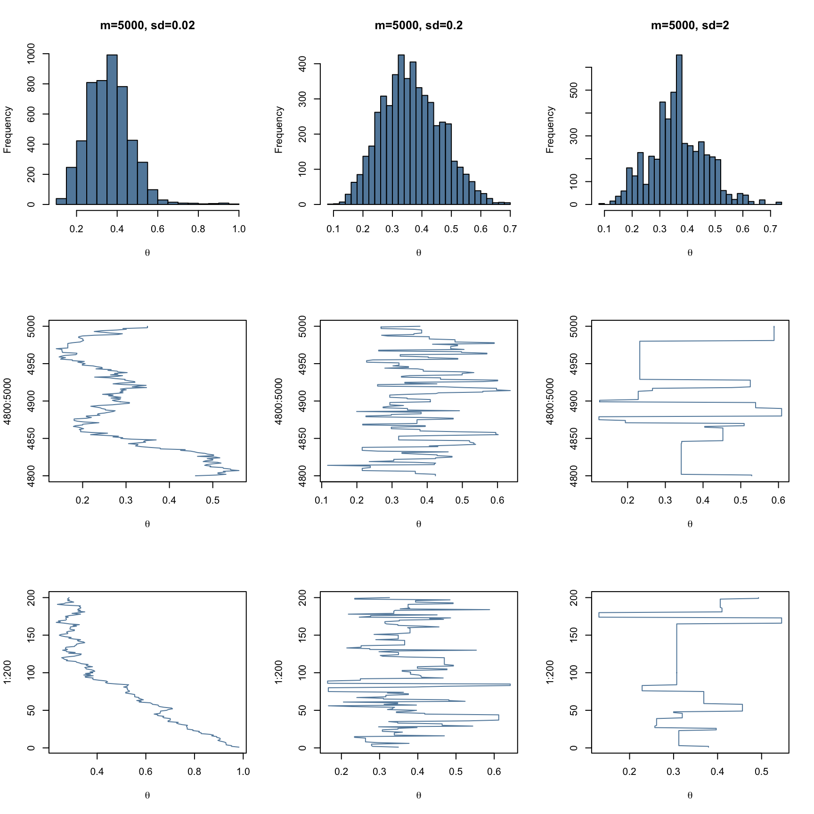
เราอาจพิจารณาประสิทธิภาพของอัลกอริทึมในข้างต้นจากสัดส่วนของจำนวนค่าพารามิเตอร์ผ่านการยอมรับต่อจำนวน proposed values ของพารามิเตอร์ ซึ่งจะพบว่ามีค่าเท่ากับ
colSums(count)/5000
[1] 0.9410 0.5086 0.0658Example 2: One-sample Mean and SD
สมมุตินักวิจัยต้องการประมาณค่าเฉลี่ย IQ ของนักเรียนในโรงเรียนสังกัด สพฐ. ว่ามีค่าสูงกว่าเกณฑ์มาตรฐานคือ 90 คะแนน หรือไม่ ในการวิจัยนักวิจัยได้สร้างแบบวัด IQ และนำไปเก็บรวบรวมข้อมูลจากนักเรียนดังกล่าวจำนวน 3000 คน พบว่ามีคะแนนดังนี้
set.seed(123)
iq<-rnorm(3000,99,10) #IQ sample data
hist(iq, nclass=30, xlab="IQ score",col=alpha("#004D80",0.7))
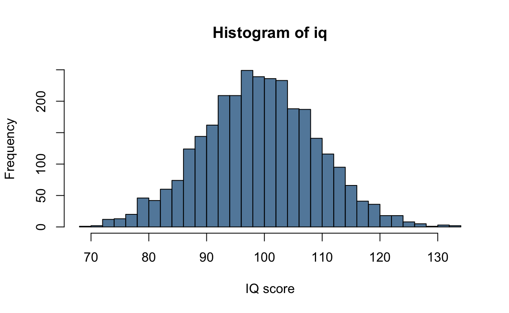
จากปัญหาในข้างต้น นักวิจัยได้กำหนดโมเดลของค่าสังเกตด้วยการแจกแจงความน่าจะเป็นแบบปกติ ดังนี้ \(y_i \sim N(\mu,\ \sigma)\) ที่มีฟังก์ชันความน่าจะเป็นคือ
\(p(y_i|\mu,\ \sigma)=\frac{1}{\sqrt{2\pi\sigma^2}}exp\{-\frac{1}{2\sigma^2}(y_i-\mu)^2\}\)
ซึ่งทำให้ได้ว่าฟังก์ชันภาวะความควรจะเป็นของข้อมูลค่าสังเกตเมื่อกำหนดพารามิเตอร์ \(\mu\) และ \(\sigma\) คือ
\(\Pi_{i=1}^n p(y_i|\mu,\sigma)=(\frac{1}{\sqrt{2\pi\sigma^2}})^nexp\{-\frac{1}{\sqrt{2\pi\sigma^2}}\sum_{i=1}^n(y_i-\mu)^2 \}\)
เนื่องจากพารามิเตอร์ทั้งสองเป็นอิสระซึ่งกันและกัน การกำหนดการแจกแจงความน่าจะเป็นก่อนหน้าให้กับพารามิเตอร์ดังกล่าวจึงสามารถกำหนดแยกจากการได้อย่างอิสระ โดยในตัวอย่างนี้จะกำหนดให้การแจกแจงความน่าจะเป็นก่อนหน้าของพารามิเตอร์ค่าเฉลี่ยมีการแจกแจงแบบปกติ ที่มีค่าเฉลี่ยเท่ากับ 90 และส่วนเเบี่ยงเบนมาตรฐานเท่ากับ 30 ดังนี้
\(p(\mu|\mu_p=90, \sigma_p=30)=\frac{1}{\sqrt{2\pi\times30^2}}exp\{-\frac{1}{2\times30^2}(\mu-90)^2 \}\)
และกำหนดให้พารามิเตอร์ความแปรปรวน (\(\sigma^2\) ) มีการแจกแจงความน่าจะเป็นก่อนหน้าเป็นแบบ uniform บนช่วง [0,10000] ซึ่งมีฟังก์ชันความน่าจะเป็นดังนี้
\(p(\sigma^2)=\frac{1}{10000}\)
รูปด้านล่างแสดงโค้งความหนาแน่นของการแจกแจงความน่าจะเป็นก่อนหน้าของ \(\mu \sim N(90,30)\) และ \(\sigma^2 \sim U(0,10000)\)
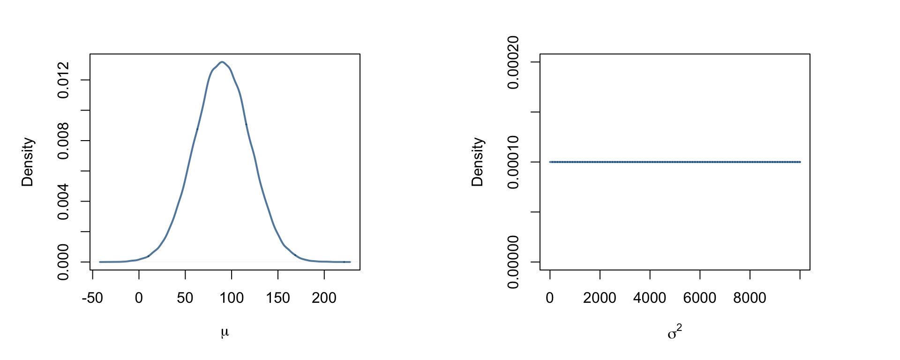
จากการกำหนดในข้างต้นจะได้ว่าความน่าจะเป็นในการเปลี่ยนสถานะของพารามิเตอร์ทั้งสองมีค่าเท่ากับ
\(p.move=min(1,\frac{p(y|\mu_{pro},\sigma_{pro})p(\mu_{pro},\sigma_{pro})}{p(y|mu_{i-1},\sigma_{i-1})p(\mu_{i-1},\sigma_{i-1})})\)
\(=min(1,\frac{p(y|\mu_{pro},\sigma_{pro})\times N(mu_{pro}|90,30) \times (1/10000)}{p(y|\mu_{i-1},\sigma_{i-1})\times N(mu_{i-1}|90,30) \times (1/10000)})\)
อย่างไรก็ตามจะเห็นว่าความน่าจะเป็นข้างต้นมีสูตรค่อนข้างซับซ้อนและการคำนวณตรง ๆ อาจมีปัญหา ผู้วิเคราะห์จึง take log เข้าที่ความน่าจะเป็นดังกล่าวจึงทำให้เกณฑ์การพิจารณากลายเป็น
\(p.move = min(0, [lnp(y|\mu_{pro},\sigma_{pro})+lnN(mu_{pro}|90,30)+0]-[lnp(y|\mu_{i-1},\sigma_{i-1})+lnN(mu_{i-1}|90,30)+0]\)
จากเงื่อนไขข้างต้นสามารถเขียนอัลกอริทึม Metropolis เพื่อประมาณพารามิเตอร์ \(\mu\) และ \(\sigma\) ได้ดังนี้
#initial value
mu<-50
sigma<-30
#iteration number
m<-5000
theta.dat<-matrix(nrow=m,ncol=6)
sd.pro<-c(0.05,0.2,2)
count<-matrix(nrow=m, ncol=3)
for(j in 1:length(sd.pro))
{
for(i in 1:m)
{
delta.mu<-rnorm(1,0,sd.pro[j])
delta.sigma<-rnorm(1,0,sd.pro[j])
#proposed values
mu.pro<-mu+delta.mu
sigma.pro<-sigma+delta.sigma
nom<-sum(dnorm(iq,mean = mu.pro,sd = sigma.pro, log=TRUE))+dnorm(mu.pro,90,30, log=TRUE)
denom<-sum(dnorm(iq,mean = mu,sd = sigma, log=TRUE))+dnorm(mu,90,30, log=TRUE)
p.move<-min(1,exp(nom-denom))
if(p.move=="NaN")
{
mu<-mu
sigma<-sigma
count[i,j]<-0
} else if (runif(1,0,1)<p.move)
{
mu<-mu.pro
sigma<-sigma.pro
count[i,j]<-1
}
else
{
mu<-mu
sigma<-sigma
count[i,j]<-0
}
theta.dat[i,2*j-1]<-mu
theta.dat[i,2*j]<-sigma
} # end of m iteration
}#end of sd loop
colnames(theta.dat)<-c("mu_sdpro1","sigma_sdpro1","mu_sdpro2","sigma_sdpro2","mu_sdpro3","sigma_sdpro3")
ประสิทธิภาพในด้านการยอมรับ proposed value ในแต่ละเงื่อนไขเป็นดังนี้
colSums(count)
[1] 3355 2245 52การแจกแจงความน่าจะเป็นภายหลังที่ประมาณได้ในตัวอย่างนี้เป็นการแจกแจงความน่าจะเป็นร่วม (joint probability distribution) เนื่องจากมีพารามิเตอร์ 2 ตัวที่ต้องการประมาณค่า รูปต่อไปนี้แสดงการประมาณการแจกแจงความน่าจะเป็นภายหลังจากตัวอย่างสุ่มของพารามิเตอร์ทั้งสองที่สร้างจากอัลอริทึม Metropolis
par(mfrow=c(2,3))
plot(theta.dat[,1],theta.dat[,2], type="l",xlab=expression(mu),ylab=expression(sigma), main="sd.pro=0.005")
plot(theta.dat[,3],theta.dat[,4], type="l",xlab=expression(mu),ylab=expression(sigma), main="sd.pro=0.02")
plot(theta.dat[,5],theta.dat[,6], type="l",xlab=expression(mu),ylab=expression(sigma), main="sd.pro=2")
library(MASS)
den3d<-kde2d(theta.dat[1000:5000,1],theta.dat[1000:5000,2])
persp(den3d, box=T,phi=20,theta=-30, xlab="mu", ylab=expression(sigma))
den3d<-kde2d(theta.dat[1000:5000,3],theta.dat[1000:5000,4])
persp(den3d, box=T,phi=20,theta=50, xlab=expression(mu), ylab=expression(sigma))
den3d<-kde2d(theta.dat[1000:5000,5],theta.dat[1000:5000,6])
persp(den3d, box=T,phi=20,theta=50, xlab=expression(mu), ylab=expression(sigma))
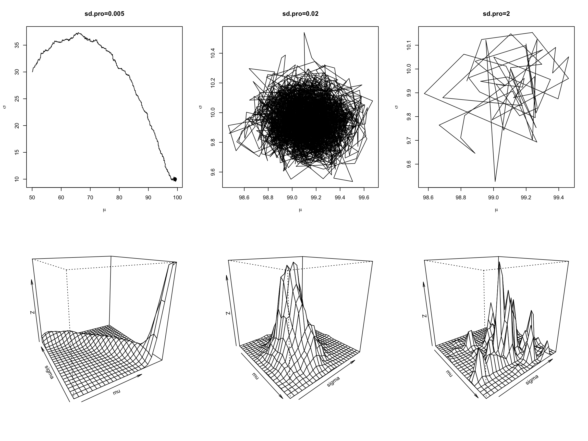
จากตัวอย่างในข้างต้น ผู้อ่านจะเห็นว่าตัวอย่างที่สุ่มจากอัลกอริทึม Metropolis ข้างต้นมีลักษณะที่แตกต่างกันออกไปตามลักษณะของ proposal distribution ที่กำหนด
ถ้า proposal distribution มีลักษณะการกระจายที่แคบกว่าการแจกแจงความน่าจะเป็นภายหลัง/การแจกแจงเป้าหมาย ที่ต้องการประมาณมาก กระบวนการสุ่มที่สร้างขึ้นจากอัลกอริทึม Metropolis ในข้างต้นจะสร้างตัวอย่างสุ่มของพารามิเตอร์ที่เป็นตัวแทน ครอบคลุมการแจกแจงความน่าจะเป็นภายหลังที่ต้องการได้ช้า ภายใต้สถานการณ์ดังกล่าว ผู้วิเคราะห์จึงต้องใช้จำนวนการทวนซ้ำที่เพ่ิมจึ้นกว่าปกติเพื่อที่จะได้ตัวอย่างของพารามิเตอร์ที่เป็นตัวแทนของการแจกแจงความน่าจะเป็นภายหลังดังกล่าวได้ ในทางกลับกันหาก proposal distribution มีการกระจายที่กว้างเมื่อเปรียบเทียบกับการแจกแจงความน่าจะเป็นภายหลัง จะทำให้การพัฒนาค่าของพารามิเตอร์ในแต่ละรอบมีการเปลี่ยนแปลงมากเกินไป และอาจไม่สามารถลู่เข้าไปสู่การแจกแจงความน่าจะเป็นภายหลังที่ต้องการได้
ปัจจัยในข้างต้นส่งผลโดยตรงต่อประสิทธิภาพของอัลกอริทึม Metropolis การพิจารณาว่า proposal distribution ดังกล่าวมีความเหมาะสมแล้วหรือไม่ อาจพิจารณาได้จากอัตราส่วนการยอมรับ ซึ่งคำนวณได้จาก จำนวนพารามิเตอร์ที่ได้รับการยอมรับต่อจำนวนการทวนซ้ำทั้งหมด รูปต่อไปนี้แสดงการเปรียบเทียบกระบวนการสุ่มที่สร้างจากอัลกอริทึม MCMC ภายใต้สถานการณ์ที่มีการกำหนดการกระจายของ proposal distribution แตกต่างกัน
ปัจจัยในข้างต้นส่งผลโดยตรงต่อประสิทธิภาพของอัลกอริทึม Metropolis การพิจารณาว่า proposal distribution ดังกล่าวมีความเหมาะสมแล้วหรือไม่ อาจพิจารณาได้จากอัตราส่วนการยอมรับ ซึ่งคำนวณได้จาก จำนวนพารามิเตอร์ที่ได้รับการยอมรับต่อจำนวนการทวนซ้ำทั้งหมด
colSums(count)/5000
[1] 0.6710 0.4490 0.0104Gibbs Sampling algorithm
อัลกอริทึม Metropolis ที่กล่าวในหัวก่อนหน้านี้เป็นอัลกอริทึมที่มีประโยชน์มากสำหรับหาการแจกแจงความน่าจะเป็นภายหลังของพารามิเตอร์ที่ไม่สามารถพิสูจน์หรือหารูปแบบปิดได้ อย่างไรก็ตามอัลกอริทึมดังกล่าวอาจมีประสิทธิภาพต่ำในหลายกรณีดังจะเห็นในตัวอย่างก่อนหน้านี้ที่หลายกรณีมีการ reject ค่า proposed value จำนวนมากจน ตัวอย่างที่เหลืออาจมีปริมาณน้อยเกินไปจนไม่เพียงพอที่จะนำไปใช้อนุมานเกี่ยวกับพารามิเตอร์ที่ต้องการ
ปัจจัยสำคัญที่มีผลต่ออัตราการยอมรับหรือปฏิเสธค่า proposed values คือการแจงแจงโครงร่าง การกำหนดการแจกแจงโครงร่างที่มีขอบเขตแคบมากเกินไป ถึงแม้ว่าในกรณีนี้อัตราการยอมรับค่า proposed value จะมีสูง แต่จะเห็นว่าอัลกอริทึมต้องใช้จำนวนรอบการทวนซ้ำที่มากขึ้น เพื่อให้ได้ตัวอย่างของพารามิเตอร์ที่ครอบคลุมและเป็นตัวแทนของการแจกแจงความน่าจะเป็นภายหลังที่ต้องการ
ในทางกลับกันหากกำหนดการแจกแจงความน่าจะเป็นโครงร่างที่มีขอบเขตกว้างมากเกินไป จะเห็นว่าอัตราการยอมรับ proposed value มีแนวโน้มต่ำลงมา ทั้งนี้เป็นเพราะมีโอกาสสูงขึ้นที่ proposed value ที่ได้จะถูกสุ่มมาแล้วอยู่นอกเหนือขอบเขตที่เป็นไปได้จริงของพารามิเตอร์ที่ต้องการประมาณ
รูปด้านล่างแสดงการแจกแจงความน่าจะเป็นภายหลังของพารามิเตอร์ \(\mu\) และ \(\sigma\) ใน mean model \(y_i=\mu+\epsilon_i\) ภายใต้สถานการณ์ที่มีการกำหนดการแจกแจงโครงร่างแตกต่างกัน
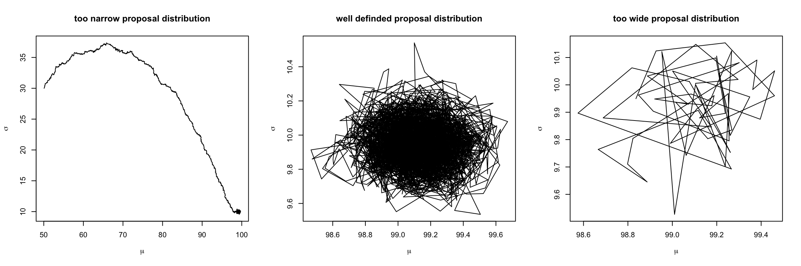
จากข้อจำกัดนี้จึงมีการพัฒนาอัลกอริทึมตัวอื่น ๆ ขึ้นมาเพิ่มเติม อัลกอริทึม Gibbs Sampling พัฒนาขึ้นโดย Geman และ Geman (1984) เป็นอัลกอริทึมหนึ่งที่มีจุดเด่นในการนำมาใช้ประมาณการแจกแจงความน่าจะเป็นภายหลังของโมเดลการวิเคราะห์ที่มีพารามิเตอร์จำนวนมาก
Gibbs sampling เป็นแนวเดินสุ่ม (random walk) ประเภทหนึ่งเหมือนกับอัลกอริทึม Metropolis ความแตกต่างระหว่าง Gibbs กับ Metropolis ของในแต่ละขั้นของการทวนซ้ำ Metropolis จะสุ่มตัวอย่างของพารามิเตอร์ทุกตัวขึ้นมาพร้อมกันจากการแจกแจงความน่าจะเป็นภายหลัง \(p(\theta_1, \theta_2, \theta_3,...,\theta_k|D)\)
ในขณะที่แต่ละรอบการทวนซ้ำของอัลกอริทึม Gibbs sampling จะแบ่งสุ่มพารามิเตอร์ทีละค่า จากการแจกแจงความน่าจะเป็นภายหลังแบบมีเงื่อนไข
\(p(\theta_1|D,\theta_2, \theta_3, ...,\theta_k)\)
\(p(\theta_2|D,\theta_1, \theta_3, ...,\theta_k)\)
\(p(\theta_3|D,\theta_1, \theta_2, ...,\theta_k)\)
…
\(p(\theta_k|D,\theta_1, \theta_2, ...,\theta_{k-1})\)
ดังนั้นจะเห็นว่าอัลกอริทึม Gibbs sampling จะใช้เวลาในแต่ละรอบของการทวนซ้ำมากกว่าอัลกอริทึม Metropolis เพราะต้องเสียเวลาในการสุ่มพารามิเตอร์ในโมเดลทีละค่าจนครบก่อน และจึงเริ่มรอบการทวนซ้ำรอบต่อไป
อัลกอริทึม Gibbs sampling เป็นอัลกอริทึมที่ดำเนินการได้ง่ายกว่า Metropolis ในทางปฏิบัติทั้งสองอัลกอริทึมจะไม่ทราบรูปแบบ (functional form) ของการแจกแจงความน่าจะเป็นร่วมภายหลังของพารามิเตอร์ทั้งหมดภายในโมเดล แต่อัลกอริทึม Gibbs sampling มีการระบุเงื่อนไขเพิ่มเติมคือจำเป็นจะต้องทราบต้องทราบรูปแบบของการแจกแจงความน่าจะเป็นแบบมีเงื่อนไขของพารามิเตอร์แต่ละตัว เมื่อกำหนดข้อมูลและพารามิเตอร์ตัวที่เหลือ การจำลองตัวอย่างพารามิเตอร์แต่ละตัวจากการแจกแจงความน่าจะเป็นแบบที่เงื่อนไขดังกล่าวด้วยจำนวนรอบทวนซ้ำที่มากเพียงพอ จะทำให้ผู้วิเคราะห์ได้ตัวอย่างจำลองที่ใช้เป็นตัวแทนการแจกแจงความน่าจะเป็นภายหลังร่วมที่ต้องการได้
จากที่กล่าวในข้างต้นทำให้พอจะเห็นได้ว่า Gibbs sampling เป็นกรณีเฉพาะของอัลกอริทึม Metropolis โดยเป็นกรณีที่การแจกแจงโครงร่างเป็นฟังก์ชันที่ขึ้นกับปริภูมิของพารามิเตอร์ภายในโมเดล และค่าตัวอย่างของพารามิเตอร์อื่น ๆ ที่เหลือ กล่าวคือ การแจกแจงโครงร่างของพารามิเตอร์ \(\theta_j\) คือการแจกแจงความน่าจะเป็นภายหลังแบบมีเงื่อนไขของพารามิเตอร์ \(\theta_j\) เมื่อกำหนดข้อมูลตัวอย่าง และพารามิเตอร์ส่วนที่เหลือในโมเดล \(p(\theta_j|D,\theta_1,\theta_2,...,\theta_{j-1},\theta_{j+1},...,\theta_k)\)
เนื่องจากการแจกแจงโครงร่างดังกล่าวเป็นการแจกแจงเดียวกันกับการแจกแจงความน่าจะเป็นภายหลังแบบมีเงื่อนไขของพารามิเตอร์ ดังนั้นอัตราการยอมรับในอัลกอริทึม Gibbs sampling จึงมีค่าเท่ากับ 100% เสมอ ดังนั้น Gibbs sampling จึงมีประสิทธิภาพสูงกว่า Metropolis ในแง่ความเร็วของการประมวลผล อย่างไรก็ตามในกรณีที่เงื่อนไขของ Gibbs sampling ไม่เป็นจริง อัลกอริทึม Metropolis ก็ยังมีความจำเป็นอยู่เช่นเดียวกัน
Assessing MCMC samples
หัวข้อนี้จะกล่าวถึงการประเมินประสิทธิภาพของลูกโซ่มาร์คอฟที่จำลองขึ้นจากอัลกอริทึมในข้างต้นว่า มีคุณสมบัติที่ดีเพียงพอจะใช้เป็นตัวอย่างสำหรับอนุมานไปยังพารามิเตอร์ภายในโมเดลการวิเคราะห์ได้หรือไม่ การตรวจสอบในส่วนนี้เป็นการดำเนินงานที่จะไม่พบในการวิเคราะห์ข้อมูลด้วยสถิติแบบดั้งเดิม คำถามสำคัญที่ผู้วิเคราะห์ต้องการคำตอบในส่วนนี้คือ กระบวนการสุ่มที่สร้างจากอัลกอริทึม MCMC มีคุณสมบัติลู่เข้าสู่การแจกแจงความน่าจะเป็นภายหลังของพารามิเตอร์แล้วหรือไม่ หรือตัวอย่างพารามิเตอร์ที่จำลองขึ้นจากอัลกอริทึมดังกล่าว มีความเป็นตัวแทนของการแจกแจงความน่าจะเป็นภายหลังของพารามิเตอร์ดังกล่าวแล้วหรือไม่นั่นเอง
การตรวจสอบดังกล่าวประกอบด้วยการตรวจสอบการลู่เข้า (convergence) อัตราการยอมรับ (acceptance rates) อัตสหสัมพันธ์ระหว่างลูกโซ่ (autocorrelation)
Convergence
การลู่เข้าของกระบวนการ MCMC คือการที่ตัวอย่างสุ่มของพารามิเตอร์ที่จำลองจากอัลกอริทึมอยู่ในสถานะที่ถูกสุ่่มจากการแจกแจงความน่าจะเป็นเป้าหมาย (target distribution) หรือการแจกแจงความน่าจะเป็นภายหลัง (posterior distribution) ที่ต้องการ การลู่เข้าดังกล่าวแตกต่างจากการลู่เข้าทั่ว ๆ ไป กล่าวคือแทนที่จะเป็นการลู่เข้าไปสู่คำตอบที่เป็นค่าคงที่ การลู่เข้าของกระบวนการ MCMC เป็นการลู่เข้าสู่การแจกแจงความน่าจะเป็น
โดยธรรมชาติของกระบวนการ MCMC เมื่อกำหนดค่าเริ่มต้นแล้ว กระบวนการจะต้องการเวลาต้องดำเนินการทวนซ้ำไปจำนวนหนึ่ง ตัวอย่างที่สุ่มจากกระบวนการจึงจะถูกสุ่มจากการแจกแจงที่เป็นสถานะคงที่ของกระบวนการ การแจกแจงสถานะคงที่นี้อาจะเป็นการแจกแจงความน่าจะเป็นภายหลังหรือไม่ก็ได้ (ประเด็นนี้จะกล่าวถึงอีกครั้งภายหลัง)
การตรวจสอบแนวโน้มการลู่เข้าด้วย Trace plot และ Density plot
แผนภาพร่องรอย (trace plot) และแผนภาพโค้งความหนาแน่น (density plot) เป็นเครื่องมือพื้นฐานอย่างแรก ๆ ที่ผู้วิเคราะห์มักใช้พิจารณาแนวโน้มการลู่เข้าของกระบวนการสุ่มที่สร้างจากอัลกอริทึม MCMC รูปด้านล่างแสดงตัวอย่าง Trace plot ในลักษณะที่มีแนวโน้มลู่เข้าและไม่ลู่เข้าสู่การแจกแจงความน่าจะเป็นภายหลัง
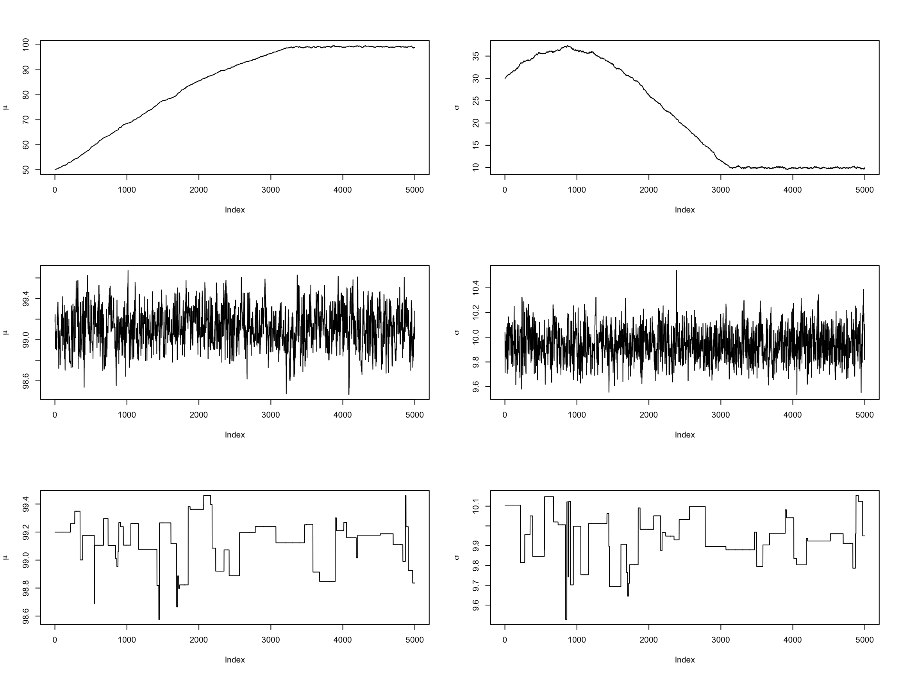
Density plot (และ Histogram) เป็นทัศนภาพอีกประเภทหนึ่งที่ให้สารสนเทศคล้ายคลึงกับ trace plot จุดเด่นคือเป็นแผนภาพที่แสดงรูปทรงการแจกแจงของการแจกแจงความน่าจะเป็นภายหลังที่สร้างขึ้นจากกระบวนการสุ่มด้วย รูปด้านล่างแสดงตัวอย่าง density plot ของตัวอย่างสุ่มพารามิเตอร์ \(\mu\) และ \(\sigma\)
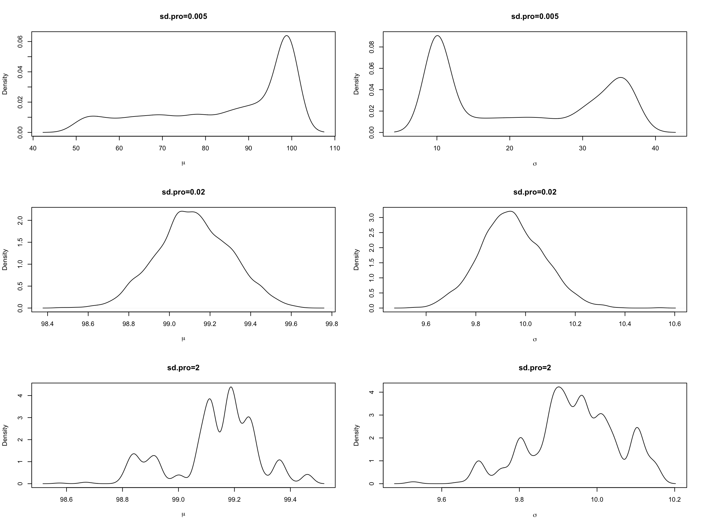
ในโปรแกรม R มี package-coda ที่ช่วยอำนวยความสะดวกแก่ผู้วิเคราะห์ในการตรวจสอบ/วินิจฉัยการลู่เข้าของลูกโซ่มาร์คอฟที่สร้างขึ้นจากอัลกอริทึม MCMC
หากตัวอย่างสุ่มของพารามิเตอร์ (ลูกโซ่มาร์คอฟ) ไม่ได้บันทึกไว้ในรูปแบบ mcmc object ผู้วิเคราะห์จำเป็นต้องเปลี่ยนตัวแปรที่บันทึกข้อมูลดังกล่าวให้อยู่ในรูปแบบดังกล่าวด้วยฟังก์ชัน mcmc(x, start=1, end=numeric(0), thin=1)
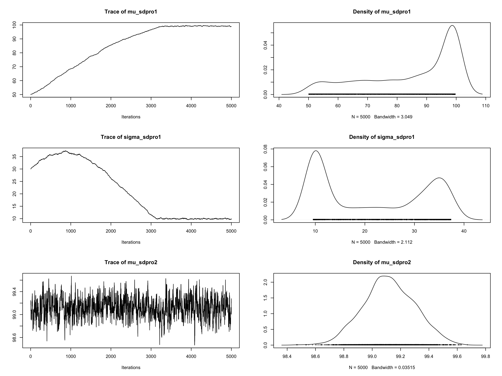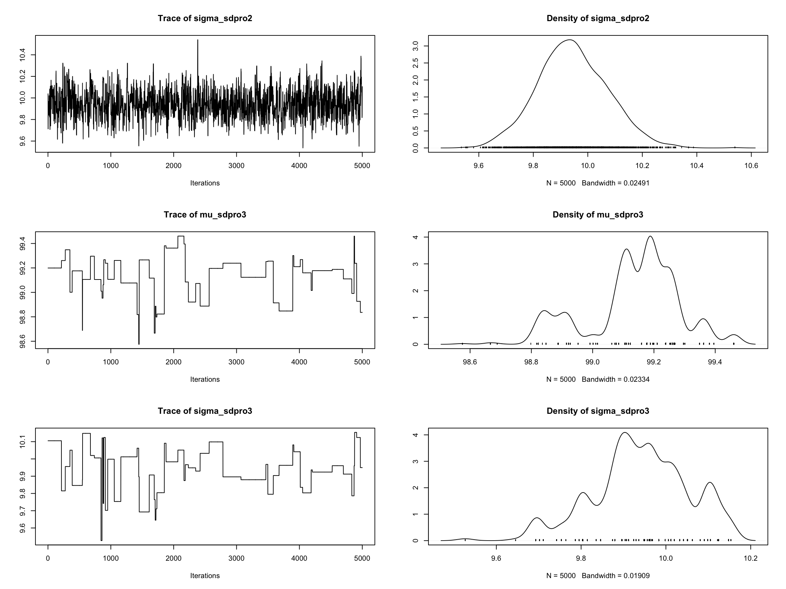
อย่างที่กล่าวไว้ในข้างต้น แผนภาพร่องรอย และแผนภาพความหนาแน่น เป็นเครื่องมือที่ใช้สำหรับตรวจสอบพฤติกรรมของตัวอย่างหรือลูกโซ่มาร์คอฟที่จำลองขึ้นว่ามีแนวโน้มที่จะลู่เข้าไปสู่การแจกแจงสถานะคงที่หรือไม่ อย่างไรก็ตามเครื่องมือดังกล่าวไม่สามารถที่จะใช้ยืนยันได้ 100% ว่าการแจกแจงสถานะคงที่ดังกล่าวนั้นเป็นการแจกแจงความน่าจะเป็นภายหลังที่แท้จริงหรือไม่ การจะยืนยันหรือพิสูจน์ข้อสงสัยดังกล่าว ผู้วิเคราะห์จำเป็นต้องมีหลักฐานอื่น ๆ มาเพิ่มเติมเพื่อสร้างข้อสรุปในประเด็นดังกล่าว
Autocorrelation
กระบวนการสุ่มที่สร้างขึ้นจากอัลกอริทึม MCMC จะให้ตัวอย่างสุ่มที่มีความสัมพันธ์ระหว่างกัน ทั้งนี้เป็นเพราะตัวอย่างสุ่มที่สร้างขึ้นใหม่นั้น จะขึ้นกับตัวอย่างที่ถูกสร้างไว้ในรอบก่อนหน้าเสมอ ลักษณะดังกล่าวจึงทำให้เกิดอัตสหสัมพันธ์ขึ้นระหว่างตัวอย่างขึ้น ซึ่งมีมากน้อยต่างกันไปตามปัจจัยต่าง ๆ ที่เกี่ยวข้อง
ในการอนุมานเชิงสถิติต่าง ๆ เกี่ยวกับพารามิเตอร์ในโมเดล ผู้วิเคราะห์จะใช้ตัวอย่างสุ่มของพารามิเตอร์ที่จำลองขึ้นจากกระบวนการ MCMC ดังกล่าว เพื่อวิเคราะห์และสร้างข้อสรุปซึ่งการวิเคราะห์ต่าง ๆ นี้ต้องการความเป็นอิสระของตัวอย่างสุ่มเป็นเงื่อนไขจำเป็นในการวิเคราะห์ การเกิดอัตสหสัมพันธ์ดังกล่าวจึงอาจเป็นปัญหาในการขั้นตอนของการอนุมานเชิงสถิติได้
นอกจากนี้หากกระบวนการสุ่มดังกล่าวมีอัตสหสัมพันธ์ที่สูงในช่วงที่กว้าง ตัวอย่างที่สุ่มได้ในแต่ละรอบของการทวนซ้ำจะมีความสัมพันธ์กันสูงและย่อมมีค่าอยู่ในบริเวณที่ใกล้เคียงกัน ส่งผลให้พฤติกรรมของกระบวนการสุ่มดังกล่าวมีแนวโน้มการเดินที่ช้าและใช้เวลานานกว่ากระบวนการดังกล่าวจะลู่เข้าไปสู่การแจกแจงสถานะคงตัว
จากเหตุผลในข้างต้น ปัญหาอัตสหสัมพันธ์ของกระบวนการ MCMC จึงเป็นปัญหาที่ต้องตรวจสอบและแก้ไขก่อนที่จะนำตัวอย่างสุ่มดังกล่าวไปใช้ในขั้นการอนุมานเชิงสถิติ
ค่าอัตสหสัมพันธ์สามารถคำนวณได้โดยใช้สูตรเดียวกับสหสัมพันธ์ของเพียร์สัน โดยเป็นการหาสหสัมพันธ์ระหว่างข้อมูลสองชุด ชุดแรกคือตัวอย่างของพารามิเตอร์ \(\theta_m, \theta_{m-1}, \theta_{m-2}, ...,\theta_{2}\) และชุดที่สองคือตัวอย่างของพารามิเตอร์ที่มีการเหลื่อมค่า 1 ช่วงเวลา \(\theta_{m-1}, \theta_{m-2},...,\theta_{1}\) สหสัมพันธ์ระหว่างชุดข้อมูลทั้งสองนี้เรียกว่า อัตสหสัมพันธ์อันดับที่ 1 (lag-1 autocorrelation)
ในทำนองเดียวกัน อัตสหสัมพันธ์ในอันดับที่สูงกว่า 1 สามารถหาได้โดยการเหลื่อมข้อมูลเพิ่มขึ้นเป็น 2, 3, 4 ,… ช่วงเวลา ข้อสังเกตคือยิ่งมีการเหลื่อมช่วงเวลามากขึ้น จำนวนตัวอย่างที่นำมาคำนวณค่าอัตสหสัมพันธ์ก็จะลดลงทีละ 1 หน่วยไปเรื่อย ๆ การวิเคราะห์อัตสหสัมพันธ์ของกระบวนการสุ่มสามารถทำได้สองลักษณะ ลักษณะแรกคือวิเคราะห์จากค่าสถิติโดยตรง และลักษณะที่สองคือใช้แผนภาพอัตสหสัมพันธ์ โดยทั้งสองแบบสามารถทำได้ในโปรแกรม R ด้วย package-coda โดยเขียนคำสั่งดังนี้
mu_sdpro1 sigma_sdpro1 mu_sdpro2 sigma_sdpro2 mu_sdpro3
Lag 0 1.0000000 1.0000000 1.00000000 1.00000000 1.0000000
Lag 1 0.9994292 0.9998234 0.82152505 0.72753970 0.9860251
Lag 5 0.9971468 0.9990995 0.39664748 0.18920770 0.9336869
Lag 10 0.9942847 0.9981647 0.17519306 0.04112503 0.8774738
Lag 50 0.9709985 0.9898665 -0.02851881 -0.02866540 0.5591402
sigma_sdpro3
Lag 0 1.0000000
Lag 1 0.9832460
Lag 5 0.9159518
Lag 10 0.8293820
Lag 50 0.4494689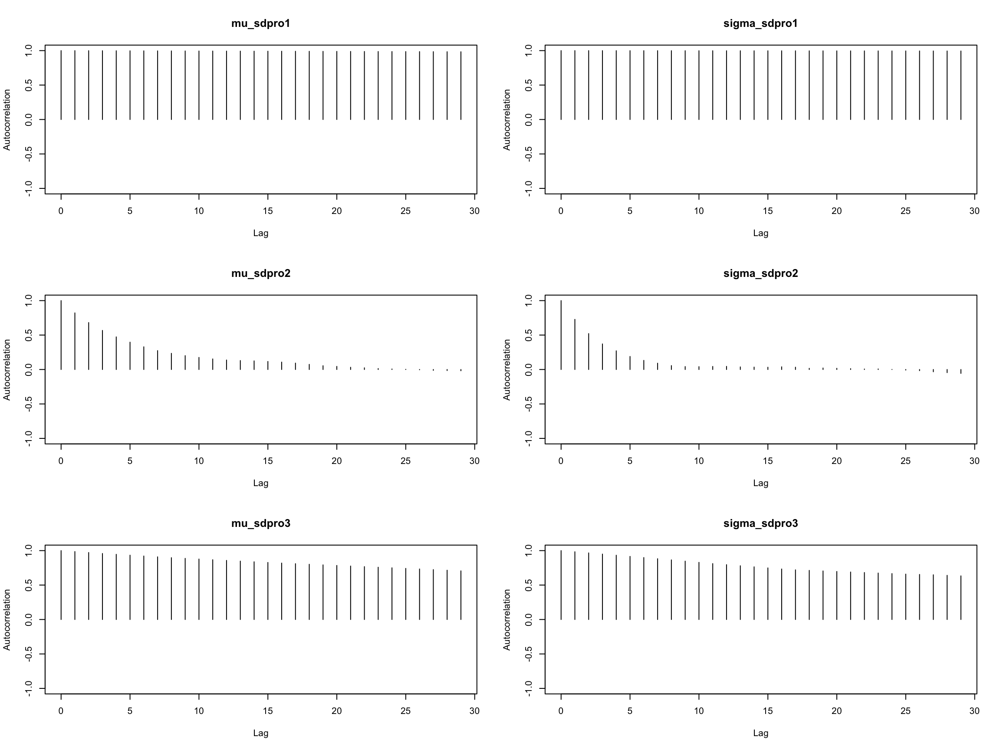
Thining
การแก้ปัญหาอัตสหสัมพันธ์สามารถทำได้โดยการกำหนดรอบการทวนซ้ำให้มากขึ้น เขียนแทนด้วย \(\theta_1, \theta_2, \theta_3, ...,\theta_m\) หาก \(n_0\) คือระยะห่าง (lag) ที่น้อยที่สุดระหว่างตัวอย่างที่มีค่าอัตสหสัมพันธ์เท่ากับหรือใกล้เคียง 0 ผู้วิเคราะห์จะเลือกเฉพาะตัวอย่าง \(\theta_{n_0}, \theta_{2n_0}, \theta_{3n_0},...,\theta_{T}\) ซึ่งมีแนวโน้มเป็นอิสระซึ่งกันและกัน ไปดำเนินการต่อในขั้นการอนุมานเชิงสถิติ เรียกการดำเนินการในข้างต้นว่า thinning
Effective Sample Size (ESS)
จากที่กล่าวในข้างต้นจะเห็นว่า ในสถานการณ์ที่กระบวนการสุ่มที่สร้างขึ้นมีอัตสหสัมพันธ์สูง ตัวอย่างสุ่มของพารามิเตอร์จะมีแนวโน้มซ้ำซ้อนกันมาก และทำให้การทวนซ้ำของกระบวนการสุ่มมีประสิทธิภาพต่ำกว่าจำนวนการทวนซ้ำที่กำหนดไว้ กล่าวคือจำนวนรอบทวนซ้ำที่กำหนดไว้อาจไม่เพียงพอที่จะนำไปประมาณการแจกแจงความน่าจะเป็นภายหลัง สถิติที่ช่วยวัดประสิทธิภาพในด้านนี้คือ effective sample size (ESS)
กำหนดให้ \(\theta_1, \theta_2, \theta_3, ...,\theta_m\) เป็นตัวอย่างสุ่มของพารามิเตอร์ที่สร้างขึ้นจากอัลกอริทึม MCMC และ \(n_0\) เป็นระยะห่าง (lag) ที่น้อยที่สุดที่ตัวอย่างสุ่มของพารามิเตอร์มีอัตสหสัมพันธ์เท่ากับหรือใกล้เคียง 0 จากการกำหนดในข้างต้นจะได้ว่า ตัวอย่างสุ่มที่สร้างจากกระบวนการสุ่มข้างต้น และเป็นอิสระซึ่งกันและกันคือ
\(\theta_{n_0}, \theta_{2n_0}, \theta_{3n_0},...,\theta_{T}\)
จะเห็นว่าในกรณีที่เกิดอัตสหสัมพันธ์ขึ้น ตัวอย่างที่เป็นอิสระซึ่งกันและกันจะมีจำนวนน้อยกว่าจำนวนตัวอย่างรวม ค่า ESS จึงมีค่าเท่ากับ \(m/n_0\)
การคำนวณค่า ESS ใน R สามารถทำได้โดยใช้ฟังก์ชัน effectiveSize()
mu_sdpro1 sigma_sdpro1 mu_sdpro2 sigma_sdpro2 mu_sdpro3
1.4270665 0.4414857 489.8072701 788.4212271 28.6767087
sigma_sdpro3
41.3083142 Monte Carlo Standard Error
Iterations = 1:5000
Thinning interval = 1
Number of chains = 1
Sample size per chain = 5000
1. Empirical mean and standard deviation for each variable,
plus standard error of the mean:
Mean SD Naive SE Time-series SE
mu_sdpro1 85.068 15.8021 0.223475 13.227925
sigma_sdpro1 21.291 10.9451 0.154787 16.472555
mu_sdpro2 99.119 0.1826 0.002582 0.008250
sigma_sdpro2 9.944 0.1291 0.001825 0.004596
mu_sdpro3 99.134 0.1512 0.002138 0.028234
sigma_sdpro3 9.941 0.1132 0.001601 0.017609
2. Quantiles for each variable:
2.5% 25% 50% 75% 97.5%
mu_sdpro1 51.757 72.609 91.524 99.09 99.49
sigma_sdpro1 9.753 10.005 19.253 33.43 36.84
mu_sdpro2 98.770 99.002 99.116 99.25 99.47
sigma_sdpro2 9.697 9.855 9.940 10.03 10.20
mu_sdpro3 98.823 99.077 99.176 99.24 99.38
sigma_sdpro3 9.693 9.879 9.948 10.01 10.15\(SE_{naive}=\sqrt{\frac{Var(\theta)}{m}}\)
\(SE_{ts}=\sqrt{\frac{Var_{ts}(\theta)}{m}}\) โดยที่ \(Var(\theta)=\frac{\sigma^2}{(1-\sum_{k=1}^K\rho_k)^2}\)
\(\sigma^2\) เป็นความแปรปรวนของความคลาดเคลื่อนสุ่มที่ประมาณจากโมเดล autoregressive (AR) อันดับที่ K ส่วน \(\rho_k\) คือค่าสัมประสิทธิ์อัตสหสัมพันธ์อันดับที่ \(k\)
Potential Scale Reduction (\(\hat{R}\) หรือ RSRF)
การตรวจสอบการลู่เข้าของลูกโซ่มาร์คอฟด้วยวิธีการที่กล่าวมา แม้จะได้ผลลัพธ์ว่ามีแนวโน้มที่ตัวอย่างลูกโซ่จะลู่เข้าไปสู่การแจกแจงใดการแจกแจงหนึ่ง แต่ก็ยังไม่สามารถยืนยันได้ว่าการแจกแจงดังกล่าวเป็นการแจกแจงเป้าหมายที่แท้จริงหรือไม่
วิธีการหนึ่งที่ช่วยเพิ่มหลักฐานและเสริมความมั่นใจให้กับผู้วิเคราะห์ว่า ตัวอย่างลูกโซ่ที่สร้างขึ้นมีการแจกแจงที่ลู่เข้าไปหาการแจกแจงความน่าจะเป็นภายหลังที่ต้องการจริง ๆ คือ การสร้างตัวอย่างลูกโซ่หลาย ๆ ชุด โดยกำหนดค่าเริ่มต้นให้แตกต่างกัน จากนั้นสังเกตผลลัพธ์ที่ได้ หากตัวอย่างทุกชุดมีแนวโน้มที่ลู่เข้าไปหาการแจกแจงเดียวกัน ผู้วิเคราะห์จะมีหลักฐานที่สนับสนุนให้เชื่อได้ว่าตัวอย่างสุ่มที่สร้างขึ้นจากอัลกอริทึม MCMC ลู่เข้าไปหาการแจกแจงความน่าจะเป็นภายหลังที่ต้องการ
การวิเคราะห์การลู่เข้านี้สามารถวิเคราะห์ได้จากทั้ง trace plot และ density plot และใช้ค่าสถิติ potential scale reduction (\(\hat{R}\)) สถิตินี้มีค่าเท่ากับอัตราส่วนระหว่างความแปรปรวนรวม (total variance) ของตัวอย่างลูกโซ่ต่อความแปรปรวนภายลูกโซ่ (within-chain variance) ดังนี้
\(\hat{R}=\sqrt{\frac{Var(\theta)}{W}}\)
โดยที่ \(Var(\theta)=(1-\frac{1}{m}W+\frac{1}{m}B)\)
\(W=\frac{1}{C}\sum_{j=1}^CS^2_j\)
\(S^2_j=\frac{1}{n-1}\sum_{i=1}^n(\theta_{ij}-\overline{\theta}_{.j})^2\)
\(B = \frac{n}{C-n}\sum_{j=1}^C(\overline{\theta}_j-\overline{\theta}_{..})\)
จากสูตรของ \(\hat{R}\) ข้างต้นจะเห็นว่า ถ้า \(\hat{R} \approx 1\) นั่นหมายความว่าตัวอย่างลูกโซ่ที่สร้างขึ้นแต่ละชุด มีการแจกแจงที่ใกล้เคียงกัน กล่าวคือตัวอย่างลูกโซ่ที่สร้างขึ้นมีคุณสมบัติลู่เข้าไปยังการแจกแจงความน่าจะเป็นภายหลังที่ต้องการ แต่ถ้าหาก \(\hat{R}>1\) บ่งชี้ว่าตัวอย่างลูกโซ่ที่สร้างขึ้นมีการลู่ออก
เกณฑ์การพิจารณา \(\hat{R}<1.1\)
นอกจากอัลกอริทึมที่กล่าวไว้ในบทเรียนนี้ยังมีอัลกอริทึม MCMC อีกหลายตัวที่สามารถใช้ประมาณการแจกแจงความน่าจะเป็นภายหลังได้ อีกอัลกอริทึมหนึ่งที่น่าสนใจคือ อัลกอริทึม Hamiltonial Monte Carlo ที่มีประสิทธิภาพสูงกว่า Metropilis และ Gibbs sampling ในแง่ของการลู่เข้าสู่การแจกแจงความน่าจะเป็นภายหลังที่ทำได้รวดเร็วกว่า ทำให้ไม่จำเป็นต้องใช้จำนวนรอบของการทวนซ้ำที่มากเท่ากับทั้งสองอัลกอริทึมข้างต้น แต่ก็มีข้อจำกัดคือในแต่ละรอบการทวนซ้ำอัลกอริทึม Hammiltoniam MCMC มีแนวโน้มที่จะใช้เวลาประมวลผลนานกว่าอัลกอริทึมทั้งสอง รายละเอียดของอัลกอริทึมนี้จะกล่าวในบทเรียนที่สอนการใช้งานโปรแกรม Stan
บทเรียนต่อไปจะกล่าวถึงการใช้งานโปรแกรม JAGs ที่เป็นโปรแกรมสำเร็จรูปโปรแกรมหนึ่งที่ใช้สำหรับประมาณการแจกแจงความน่าจะเป็นภายหลังโดยอาศัยอัลกอริทึม Gibbs sampling ในข้างต้น
next –> Introduction to JAGs
Distill is a publication format for scientific and technical writing, native to the web.
Learn more about using Distill at https://rstudio.github.io/distill.